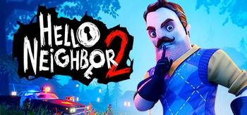

Hello Neighbor 2 (рус. Привет, сосед 2), ранее - Hello Guest (рус. Привет, гость) — игра из серии игр Hello Neighbor, которая является продолжением первой игры (Hello Neighbor). Самая первая версия игры, а именно — Hello Guest Prototype, появилась 20 декабря 2019 года в виде архива с лаунчером версии, который был открыт 5 января 2020 года. Последняя, на данный момент, версия игры — демо, была выпущена 20 сентября 2022 года. Полная версия игры выйдет 6 декабря 2022 года.
Hello Neighbor 2 Доверяете своим соседям? Подумайте еще раз. Hello Neighbor 2 — это стелс-хоррор, в котором нужно пробраться в дом жуткого соседа и выведать его тайны. Вы, обычный журналист, взялись за дело, за которое никто не отважился взяться. Вашим противником управляет искусственный интеллект: он учится по ходу игры и подстраивает свое поведение под ваши действия и действия других игроков. Поверьте, ему есть чем вас удивить! Сумеете ли вы обхитрить соседа и узнать, что же он скрывает? Проведите собственное журналистское расследование: ваши соседи наверняка не те, кем кажутся. Зачем, например, вон тот усатый джентльмен каждую ночь ходит в парк аттракционов?.. Перед вами целый город с его интерактивными домами и жителями — исследуйте улочки, пробирайтесь в дома, следите за соседями. Вы против ИИ: кто кого? Каждый персонаж Hello Neighbor 2 завязан на нейросети, буквально учится на ваших действиях и сделает все, чтобы скрыть свои тайны от любопытных глаз. Узнайте, что же такое скрывает местечко Вороньи Ручьи!
| разработчик | tynyBuild Eerie Guest Studios |
|---|---|
| Платформа | Xbox Series X PC | Движок | Unreal Engine 4 |